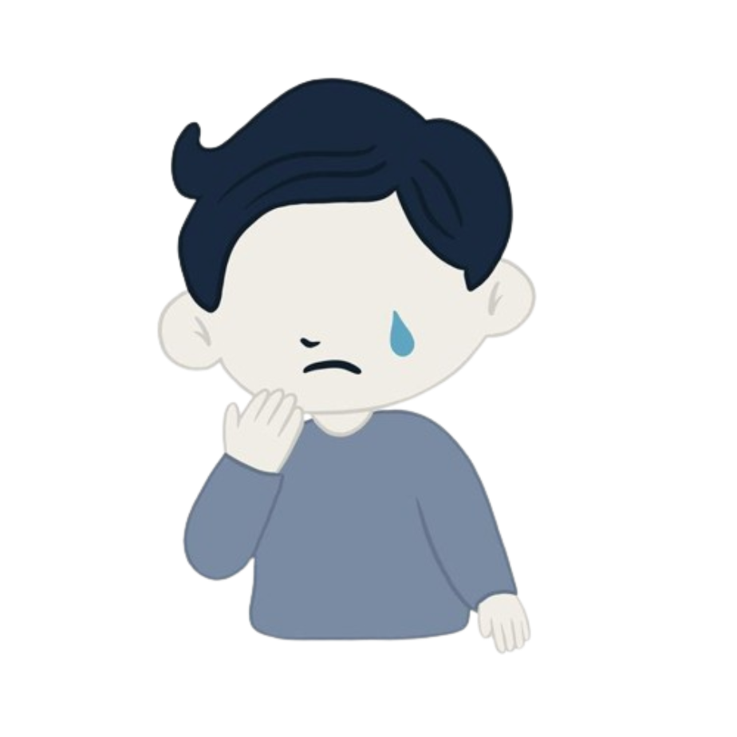
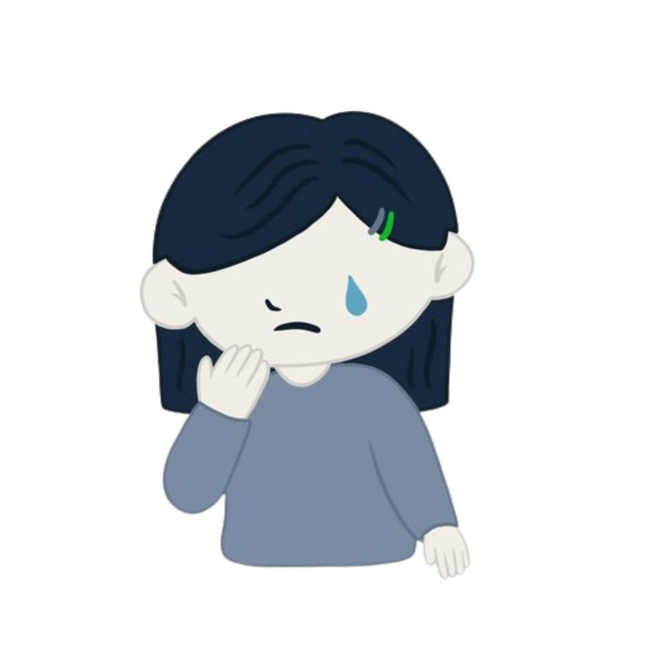

strugles of
Body Image
“It's estimated that around one in ten men have experienced suicidal thoughts and feelings and 4% have deliberately hurt themselves because of their body image issues. Body image issues can also lead to disordered eating and muscle dysmorphia - an extreme preoccupation with having muscles.”
“Studies show that girls who share more photos online and use photoshop to edit their pictures feel worse about their appearance and exhibit greater eating concerns, which can include restricting their intake, removing certain food groups, or overeating to cope with negative body image and low self esteem.”

